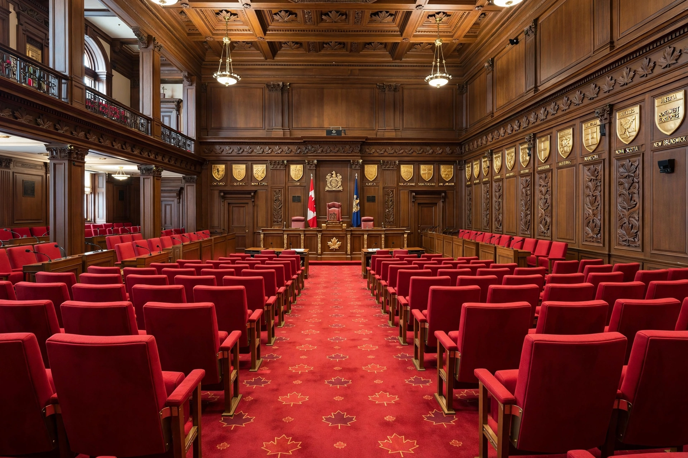

Senate of Canada

The Senate of Canada (French: Sénat du Canada) is the upper house of the Parliament of Canada. It consists of 105 senators appointed by the governor general on the advice of the prime minister, distributed by region. Together with the Crown and the House of Commons, it constitutes the federal legislature. Senators serve until the age of 75.
| Type | Upper house of the Parliament of Canada |
|---|---|
| Seats | 105 |
| Speaker | Speaker of the Senate |
| Meeting place | Senate of Canada Building, Ottawa |
| Established | 1 July 1867 |
| Legal basis | Constitution Act, 1867 |
Composition
Seats are distributed among four regional divisions of 24 seats each — Ontario, Quebec, the Maritime provinces and the Western provinces — with six additional seats for Newfoundland and Labrador and one each for Yukon, the Northwest Territories and Nunavut. Quebec senators are appointed for specific electoral divisions, a survival of the original 1867 arrangements. To qualify, a senator must be at least 30 years old, own real property worth at least $4,000 in their province or territory, and hold total property worth at least $4,000 above debts — figures unchanged since 1867.
Role and powers
The Senate reviews and may amend or reject bills passed by the House of Commons, though money bills must originate in the Commons and by convention the Senate rarely defeats legislation outright; its role is often described as "sober second thought". It also conducts committee studies and investigations. Because senators are unelected, the chamber's legitimacy has long been debated; reform proposals have ranged from election (the "Triple-E" Senate) to abolition. In the 2014 Senate Reform Reference, the Supreme Court held that election or term limits require provincial consent, and abolition requires unanimity.
Since 2015, appointments have been made through an independent advisory board process, and most new senators sit in the Independent Senators Group rather than in party caucuses.
History
The Senate was designed in 1867 partly on the model of the British House of Lords and partly to balance representation by population in the Commons with regional equality. Until 1929 women were excluded, on the basis that "persons" in the British North America Act did not include them; the Judicial Committee of the Privy Council reversed that position in the famous Persons Case, and Cairine Wilson became the first female senator in 1930. Mandatory retirement at 75 was introduced in 1965; before then appointments were for life. Since 2019 the Senate has sat in the Senate of Canada Building, Ottawa's former central railway station, while Centre Block undergoes a decade-long renovation.